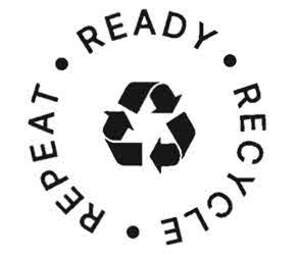

Trade Mark Journal No.2025/043 24 October 2025
UK00004246010 7 August 2025 (35,39,40,41)

International priority date claimed: 18 July 2025
(Canada)
(2412550)
- Class 35
- Promoting public awareness of the benefits of recycling blue box materials namely post-consumer discarded paper, cardboard, glass, rigid and flexible plastics and metal; public advocacy to promote awareness of benefits of recycling blue box materials namely post-consumer discarded paper, cardboard, glass, rigid and flexible plastics and metal; advertising services to promote public awareness and influence consumer behaviour concerning recycling blue box materials namely post-consumer discarded paper, cardboard, glass, rigid and flexible plastics and metal; assistance, advisory and consultancy services to producers of consumer packaging and paper in meeting recycling regulation requirements, including collection, management, processing, promotion, education and reporting; assistance, advisory and consultancy services to promote the recycling of blue box materials namely post-consumer discarded paper, cardboard, glass, rigid and flexible plastics and metal and awareness of recycling programs for blue box materials namely post-consumer discarded paper, cardboard, glass, rigid and flexible plastics and metal; managing and administering a program where used packaging and paper materials are collected, recycled and returned to producers for use as recycled content in new products and packaging; assistance, advisory and consultancy services relating to the development and operation of recycling collection systems; data management services for reporting supply and recycling performance to regulators.
- Class 39
- Collection and transportation of blue box materials namely post-consumer discarded (i) product packaging, such as containers for ready-to-drink beverage products made from metal, glass, paper or rigid plastic, or any combination of those materials, glass containers, metal containers, rigid plastics containers, flexible plastics packaging materials such as plastic bags, plastic film, plastic wrap, plastic pouches, glass, (ii) paper products, namely newspapers, magazines, promotional publications, directories, catalogues, paper used for copyright, writing and printing, and cardboard, (iii) materials used for the containment, protection, handling, delivery, presentation or transportation of products ordinarily disposed of after a single use, including aluminum foil, metal trays, plastic films, plastic wrap, wrapping paper, paper bags, beverage cups, plastic bags, cardboard boxes and envelopes, (iv) products supplied with food or beverage products that facilitate their consumption and are ordinarily disposed of after a single use, such as straws, cutlery and plates, and (v) compostable products and packaging.
- Class 40
- Recycling of blue box materials namely post-consumer discarded (i) product packaging, such as containers for ready-to-drink beverage products made from metal, glass, paper or rigid plastic, or any combination of those materials, glass containers, metal containers, rigid plastics containers, flexible plastics packaging materials such as plastic bags, plastic film, plastic wrap, plastic pouches , glass, (ii) paper products, namely newspapers, magazines, promotional publications, directories, catalogues, paper used for copyright, writing and printing, and cardboard, (iii) materials used for the containment, protection, handling, delivery, presentation or transportation of products ordinarily disposed of after a single use, including aluminum foil, metal trays, plastic films, plastic wrap, wrapping paper, paper bags, beverage cups, plastic bags, cardboard boxes and envelopes, (iv) products supplied with food or beverage products that facilitate their consumption and are ordinarily disposed of after a single use, such as straws, cutlery and plates, and (v) compostable products and packaging; recycling of consumer packaging namely post-consumer discarded (i) product packaging, such as containers for ready-to-drink beverage products made from metal, glass, paper or rigid plastic, or any combination of those materials, glass containers, metal containers, rigid plastics containers, flexible plastics packaging materials such as plastic bags, plastic film, plastic wrap, plastic pouches , glass, (ii) paper products, namely newspapers, magazines, promotional publications, directories, catalogues, paper used for copyright, writing and printing, and cardboard, (iii) materials used for the containment, protection, handling, delivery, presentation or transportation of products ordinarily disposed of after a single use, including aluminum foil, metal trays, plastic films, plastic wrap, wrapping paper, paper bags, beverage cups, plastic bags, cardboard boxes and envelopes, (iv) products supplied with food or beverage products that facilitate their consumption and are ordinarily disposed of after a single use, such as straws, cutlery and plates, and (v) compostable products and packaging and paper materials; processing of blue box materials namely post-consumer discarded (i) product packaging, such as containers for ready-to-drink beverage products made from metal, glass, paper or rigid plastic, or any combination of those materials, glass containers, metal containers, rigid plastics containers, flexible plastics packaging materials such as plastic bags, plastic film, plastic wrap, plastic pouches, glass, (ii) paper products, namely newspapers, magazines, promotional publications, directories, catalogues, paper used for copyright, writing and printing, and cardboard, (iii) materials used for the containment, protection, handling, delivery, presentation or transportation of products ordinarily disposed of after a single use, including aluminum foil, metal trays, plastic films, plastic wrap, wrapping paper, paper bags, beverage cups, plastic bags, cardboard boxes and envelopes, (iv) products supplied with food or beverage products that facilitate their consumption and are ordinarily disposed of after a single use, such as straws, cutlery and plates, and (v) compostable products and packaging.
- Class 41
- Education and training in the field of recycling blue box materials namely post-consumer discarded paper, cardboard, glass, rigid and flexible plastics and metal; educational demonstrations in the field of recycling blue box materials namely post-consumer discarded paper, cardboard, glass, rigid and flexible plastics and metal.
Circular Materials
Representative: Sonder & Clay